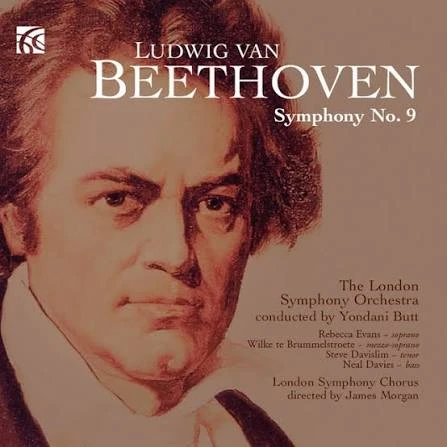
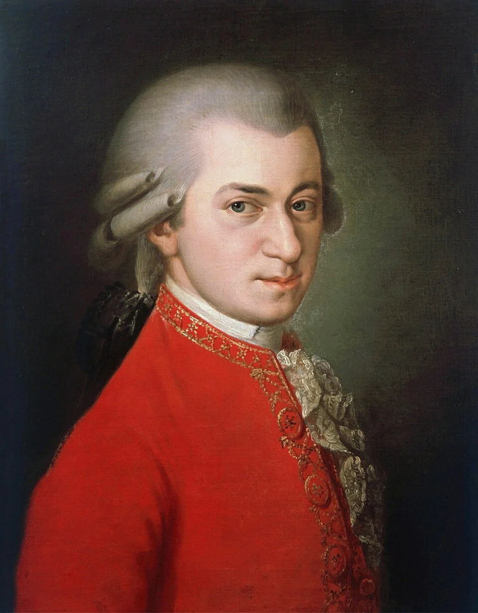
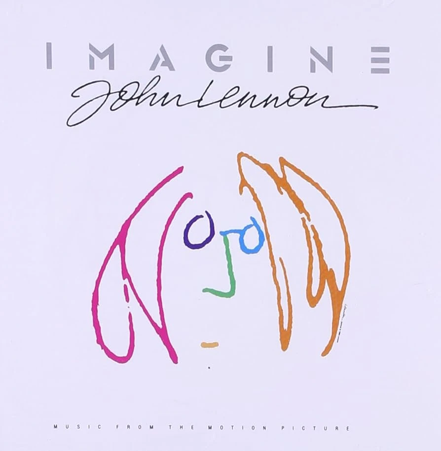
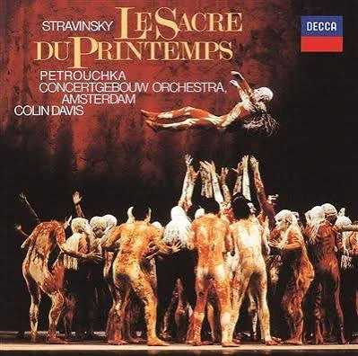
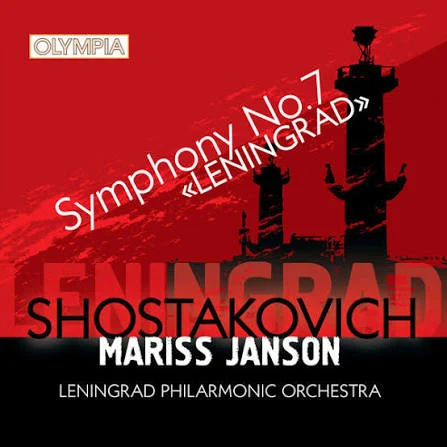
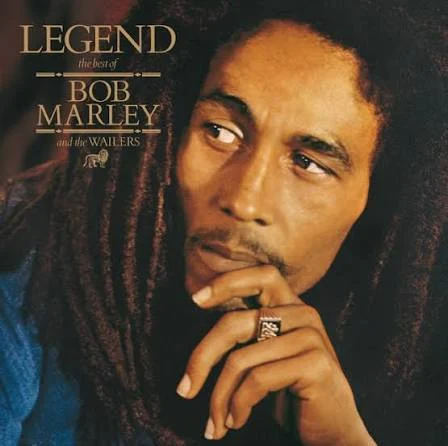
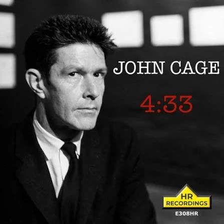
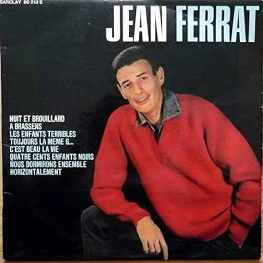

À découvrir · Œuvre n° 1
Symphonie n° 9
Ludwig van Beethoven · 1824 · Symphonie avec chœur
Né de la solitude d'un homme sourd, le chant final rêve d'une humanité réconciliée ; mais l'histoire montre qu'un hymne à la fraternité peut aussi servir ceux qui la nient.
Lire la ficheFraternité universelleJoie et souffranceMusique et politique
Toutes les œuvres
01
Symphonie n° 9
Ludwig van Beethoven · 1824 · Symphonie avec chœur
Né de la solitude d'un homme sourd, le chant final rêve d'une humanité réconciliée ; mais l'histoire montre qu'un hymne à la fraternité peut aussi servir ceux qui la nient.
✓ Écoutée
02

Requiem Wolfgang Amadeus Mozart · 1791 · Messe des morts, inachevée Tous les hommes meurent, et tous ont besoin de rites pour le supporter : le Requiem donne une voix à la peur et à l'espérance de chacun devant la mort, et reste, inachevé, l'image d'une vie interrompue. ✓ Écoutée 03 Strange Fruit Billie Holiday · 1939 · Chanson contre le lynchage Des hommes en ont pendu d'autres sous les yeux d'une foule qui posait pour la photo : en chantant ces « fruits étranges », Billie Holiday force l'Amérique à regarder ce qu'elle refusait de voir, et rend aux victimes leur humanité. ✓ Écoutée 04
Imagine John Lennon · 1971 · Chanson pour la paix Les frontières, les religions et la propriété divisent les hommes : Imagine invite à les penser disparues pour voir une seule humanité, au risque d'une utopie trop douce pour un monde qui reste en guerre. ✓ Écoutée 05
Le Sacre du printemps Igor Stravinsky · 1913 · Ballet Une communauté sacrifie l'une des siennes pour que revienne le printemps : le Sacre montre, sous la civilisation, la violence des rites collectifs, et ce qu'une foule est prête à faire d'un seul être. ✓ Écoutée 06 Le Chant des partisans Anna Marly, Joseph Kessel et Maurice Druon · 1943 · Chant de la Résistance Quand la liberté est écrasée, des hommes se lèvent pour la défendre, quitte à tuer et à mourir : le Chant des partisans fait de cette résistance une fraternité, où chaque combattant tombé est remplacé par un autre. ✓ Écoutée 07 Le Déserteur Boris Vian · 1954 · Chanson antimilitariste Un homme seul écrit au président qu'il ne tuera pas : le Déserteur oppose la conscience d'un individu à la raison d'État, et rappelle que l'ennemi qu'on lui désigne est aussi un homme. ✓ Écoutée 08
Symphonie n° 7 « Leningrad » Dmitri Chostakovitch · 1941 · Symphonie Dans une ville où l'on meurt de faim, des hommes jouent une symphonie : la culture devient une manière de rester humain face à la barbarie, mais aussi un instrument de propagande au service d'un autre pouvoir. ✓ Écoutée 09
Redemption Song Bob Marley · 1980 · Chanson pour la liberté L'esclavage a nié l'humanité de millions d'hommes, et ses chaînes survivent dans les esprits : Redemption Song appelle chacun à se libérer lui-même, car personne d'autre ne le fera à sa place. ✓ Écoutée 10
4′33″ John Cage · 1952 · Pièce pour n'importe quel instrument Le silence absolu n'existe pas pour un être vivant : en ne jouant rien, Cage oblige l'auditeur à écouter le monde et à se demander ce qui fait une œuvre, la main de l'artiste ou l'attention de celui qui la reçoit. ✓ Écoutée 11
Nuit et brouillard Jean Ferrat · 1963 · Chanson sur la déportation Les nazis voulaient faire disparaître les déportés sans laisser de trace : en les chantant, Ferrat refuse cet effacement et fait de la mémoire un devoir, contre l'oubli et contre ceux qui voudraient tourner la page. ✓ Écoutée
12
We Are the WorldUSA for Africa · à venir
13
Le Voyage d'hiverFranz Schubert · à venir
14
Die RoboterKraftwerk · à venir
15
A Change Is Gonna ComeSam Cooke · à venir
16
AlrightKendrick Lamar · à venir